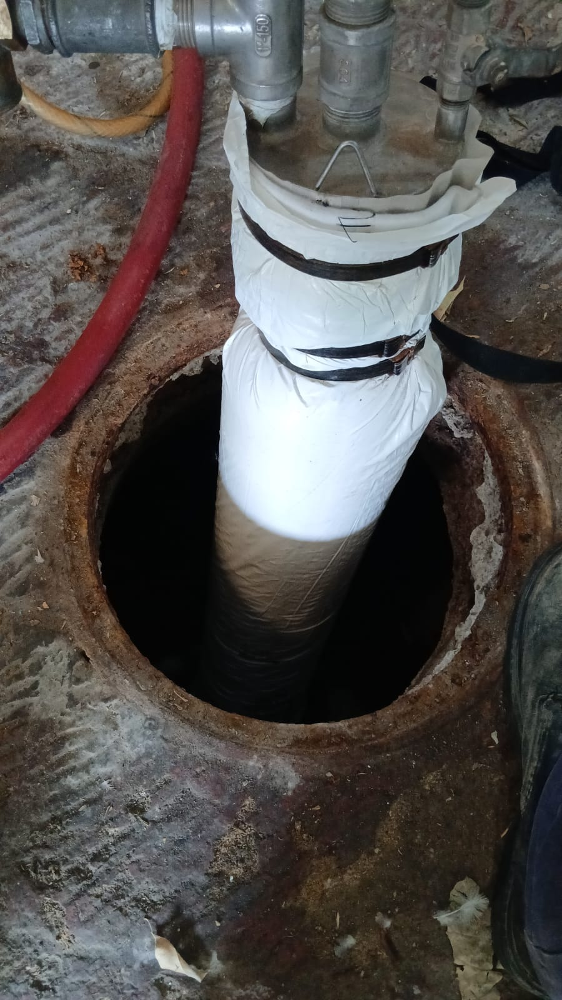
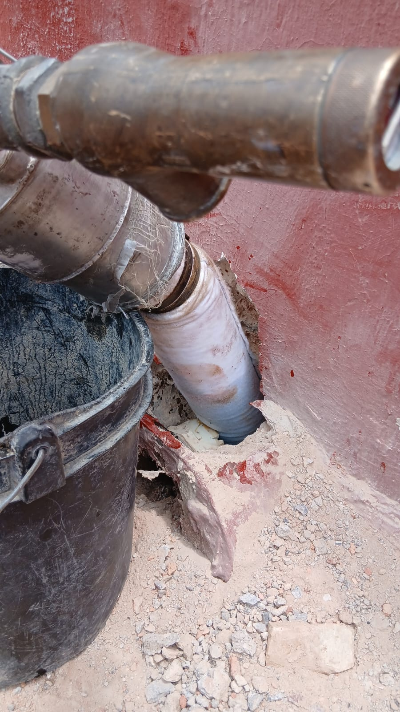
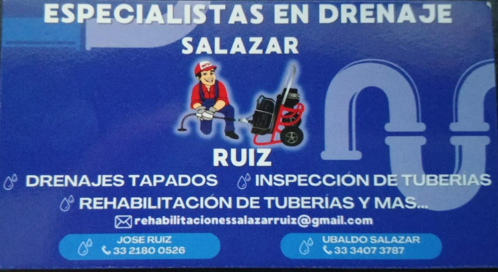

¿Qué es nuestra empresa? Una Definición Fundamental
"Somos una empresa especializada en la rehabilitación de sistemas de drenaje, ofreciendo soluciones eficientes y duraderas para el mantenimiento y reparación de tuberías. Nuestro compromiso es garantizar la calidad y funcionalidad de las redes de drenaje, adaptándonos a las necesidades específicas de cada cliente."
Un Breve Recorrido por la Historia de la empresa
Nuestra historia sobre cómo se llegó a formar la empresa se basa en algunos años de experiencia en el ramo, durante los cuales hemos realizado diversos trabajos de rehabilitación y reparación, garantizando la satisfacción de los clientes a quienes les hemos ofrecido nuestros servicios.
Evaluando el problema
En el proceso de rehabilitación con manga, una técnica que permite evitar la apertura de zanjas. Para ello, utilizamos una cámara de inspección tipo manguera que nos permite examinar el interior de las tuberías, identificar con precisión los daños y, finalmente, evaluar el estado del sistema para determinar si requiere rehabilitación o reparación.
Volver a la pagina principalContactos directos
rehabilitacionessalazarruiz@gmail.com
Ubaldo Salazar Sanchez (33 3407 3787).
Guadalupe Villaseñor Ruiz (33 2180 0526).
Roberto Rodriguez Arauza (33 1336 6431).
Servicios adicionales
En estos servicios adicionalesse incluyen
Impermeabilizacion de casas
Lavado de tinacos
Instalacion de tinacos
Calentadores solares
Instalacionde herrajes de tanque de wc
Fugas de agua
Instalacion de tuberias
Marcos de medidor
Sopleteado de tuberia.
Volver a la pagina principal